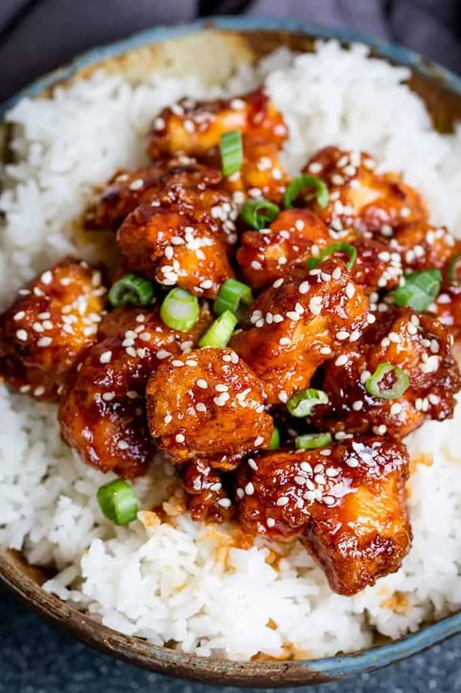

Asian Crispy Sesame Chicken

Sesame Chicken consists of tender chicken that is coated in egg and cornstarch,
deep-fried until cripsy, and then coated in a delicious sweet, salty and tangy sauce.
Reference Recipe: Link
Ingredients:
Chicken
- 5 tbsp vegetable oil
- 2 eggs - lightly beaten
- 3 tbsp cornflour (cornstarch)
- 10 tbsp plain (all-purpose) flour
- 1/2 tsp salt
- 1/2 tsp pepper
- 1/2 tsp garlic salt
- 2 tsp paprika
- 3 chicken breast fillets - chopped into bite-size chunks
Sauce
- 1 tbsp sesame oil
- 2 cloves garlic
- 1 tbsp chinese rice vinegar
- 2 tbsp honey
- 2 tbsp sweet chilli sauce
- 3 tbsp ketchup
- 2 tbsp brown sugar
- 4 tbsp soy sauce
To Serve
- Steamed Rice
- 2 tbsp sesame seeds
- Small bunch spring onions/scallions - chopped
Steps
- Heat the oil in a wok or large frying pan until very hot.
- Whilst the oil is heating, place the egg in one shallow bowl and the cornflour in another shallow bowl.
Add the flour, salt, pepper, garlic salt and paprika to another shallow bowl and mix together.
- Dredge the chicken in the cornflour, then dip in the egg (make sure all of the chicken is covered in egg wash),
and finally dredge it in the seasoned flour. Add to the wok and cook on a high heat for 6-7 minutes, turning two or three times during cooking, until well browned.
Remove from the pan and place in a bowl lined with kitchen towels.
- Add all of the sauce ingredients to the hot wok, stir and bubble on a high heat until the sauce reduces by about a third (should take 2-3 minutes).
Add the chicken back in and toss in the sauce to coat. Cook for 1-2 minutes.
- Turn off the heat and divide between four bowls.
Serve with boiled rice and top with sesame seeds and spring onions.